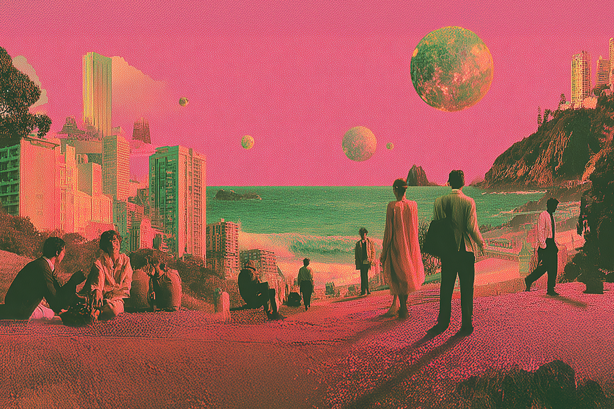

Bienvenido a la hiperrealidad con Sora
Lo que ves ya no tiene por qué ser verdad.
Lo que ves ya no tiene por qué ser verdad.

Seguro lo viste hace algunas semanas. La empresa OpenAI, creadora de ChatGPT, lanzó un generador de video tan bueno que asusta. La aplicación se llama Sora y genera videos a partir de inteligencia artificial con instrucciones sencillas.
Desde que salió la app, que es gratuita en iPhone, se ha prestado para diferentes propósitos. Muchas personas la usaron por entretenimiento, creando videos de animales o de celebridades de Hollywood en diferentes situaciones. Pero, obviamente, también se ha usado para difundir noticias falsas mostrando videos de cosas que no ocurrieron.
En la era en que vivimos, las pruebas visuales siempre han servido para comprobar cosas. ¿Qué va a pasar ahora que las fotos y videos están perdiendo su credibilidad?
Lo primero es que cualquiera puede descargar Sora, siempre y cuando esté disponible en tu tienda de iOS. Pero, el servicio solo puede usarse a través de una invitación, es decir, recibiendo un código desde otro usuario ya existente. Como era de esperarse, mucha gente ha compartido masivamente códigos en redes como Reddit o Discord.
Una vez ya concedido el acceso, el usuario puede generar videos a partir de una foto real, para descargarlo o postearlo directamente en TikTok o Instagram. Hace algunas semanas, OpenAI comunicó que Sora ya está disponible sin código de invitación para Estados Unidos, Japón, Canadá y Corea del Sur. ¿Dónde está el truco? Es por tiempo limitado, es decir, te pueden quitar el acceso en cualquier minuto.
Los expertos ya se han pronunciado sobre las problemáticas que esto plantea. Para hacerse una idea, se pueden generar videos como:
Estamos entrando a una era en que la línea entre lo real y lo falso se desdibuja por completo. Lo que antes era una prueba irrefutable —una imagen, un video, un audio— ahora puede ser solo una simulación.
Los expertos le llaman “hiperrealidad”: un estado donde lo artificial es tan convincente que ya no importa si es verdad o no. Lo importante es que parezca real, lo demás queda de lado.
En este contexto, la alfabetización digital se vuelve muy relevante. Aprender a verificar fuentes, detectar manipulaciones y entender cómo funcionan las IA generativas va a ser tan crucial como aprender a leer o escribir. Eso también cambia los paradigmas de evaluación: si antes nos evaluaban por citar en norma APA correctamente e incluir fuentes valiosas, hoy quizás el sistema debería migrar hacia desarrollar el pensamiento crítico en un mundo donde tenemos todo al alcance de la mano.
Sora puede ser una herramienta poderosa, siempre que sepamos usarla con criterio. Y tal vez, dentro de algunos años, volvamos a valorar las películas o los cortos animados a mano. Porque, al final, todo tiempo pasado fue mejor… o al menos, eso nos hacen creer.
 Tecnología
TecnologíaSi eres como yo y revisas TikTok e Instagram constantemente, te habrás dado cuenta de que estas redes son casi como un experimento social.
 Tecnología
TecnologíaHablamos mucho de inteligencia artificial. La tenemos integrada en nuestra vida, nos ayuda en nuestros trabajos y le preguntamos cosas de…
 Tecnología
TecnologíaDurante años hemos pensado en la inteligencia artificial como algo súper frío: servidores gigantes, computadores procesando datos y…